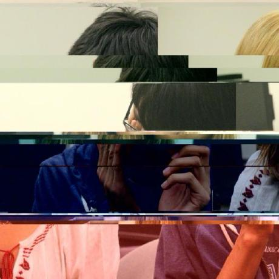

About
Hi, I'm Gibran Garcia and I'm currently studying Computer Science. I'm passionate about art and programming. I'm always trying to mix the two in my projects.
In my free time I like to read, skate, and draw.
Projects

I was inspired by the book Steal like an Artist by Austin Kleon that mentioned swipe files. The basic idea is that swipe files are files where you store all the things in the world that have inspired you. It's meant to be something that you can look upon for when you need ideas and inspiration. I am attempting to create a program that makes it easy to observe the interrelation between different pieces, and different media, emulating a bulletin board with all your files. Creating a directory on my computer where I can store all these sources of inspiration doesn't allow me to study these sources holistically, only individually. This is an attempt at fixing that.

A 3D gallery featuring Claude Monet's work. The images are scraped from the Met's Open Collection Online. My hope is to one day make it possible for anyone to search for an artist and have a 3D gallery instantly created for them.

After watching Cowboy Bebop for the first time, I knew I had to make something related to it. Stop Edward Wong Hau Pepelu Tivrusky IV from hacking into your website and see how long you can last.

A visual audio player made in openFrameworks. I really want to remake this one in Three.js one day. Until then, here's the openFrameworks version.

Oh just some sketches. Sketches so don't take them seriously~ I should really add more to it.
Art

3D models I've made over the years. They were made in Blender and any printer firendly models are clearly indicated as such.